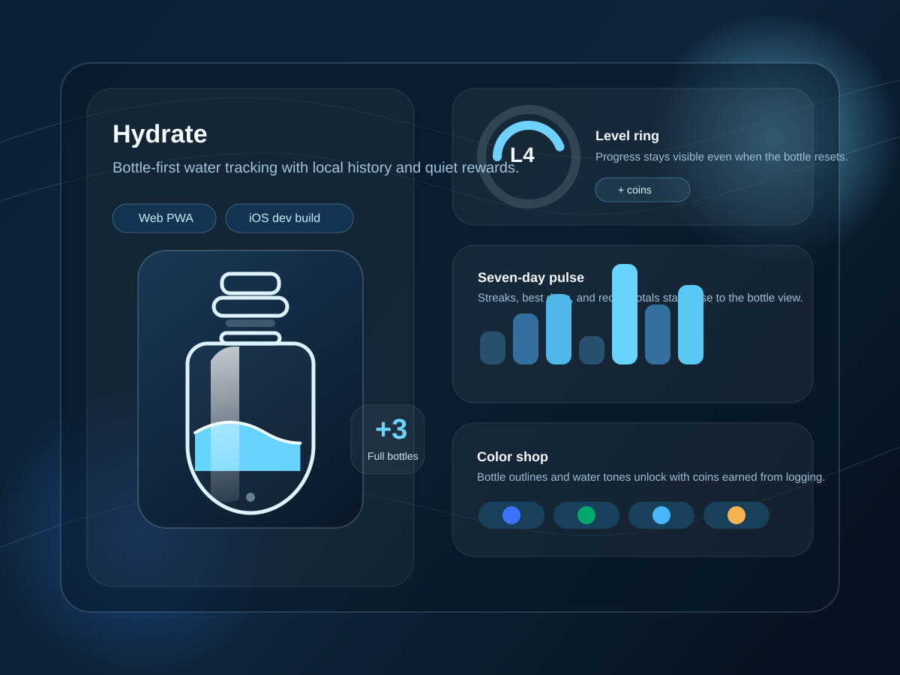
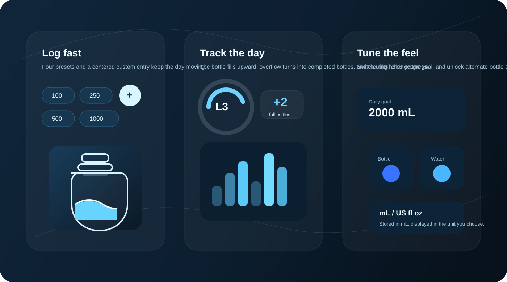

Bottle-first feedback
The main view tracks intake through a filling bottle with overflow counted as completed bottles instead of extra clutter.
Mobile app / product overview
Hydrate turns daily logging into a visible ritual: quick intake taps, a filling bottle, streaks that stay in reach, and a local-first record that can travel as a PWA or an iOS developer build.

What it is
The repo centers everything around a single bottle. Intake changes are visible immediately, overflow becomes completed bottles, and the ring keeps level progress visible even after the bottle resets.
The surrounding views stay practical: daily totals, seven-day bars, streaks, unit switching, adjustable goals, and a small coin loop that unlocks alternative bottle and water colors.
What stays in reach
The main view tracks intake through a filling bottle with overflow counted as completed bottles instead of extra clutter.
A sticky bottom action bar exposes preset amounts plus a centered custom entry for one-off amounts.
The goal is adjustable, and the display can switch between mL and US fl oz while keeping storage in mL.
The stats surface recent totals, best day, and streak windows rather than trying to become a full analytics tool.
Coins are earned from intake and spent on bottle or water colors, all persisted locally with the rest of the log.
Daily flows
Tap a preset, watch the bottle rise, and let the tracker hold the current day without forcing a separate journal habit.
Adjust the goal and unit display to match the way you already measure intake instead of adapting to a fixed format.
Use the compact history, streaks, and best-day view to see whether the habit is holding without leaving the app context.
Visual reference

Proof and availability
The README describes the app as installable and offline-capable through Vite PWA.
The repo contains a Capacitor iOS wrapper and Xcode project for developer builds.
Daily totals, entries, coins, and cosmetic unlocks are stored locally in a single state object.
The stats surface seven-day totals, a best day over fourteen days, and streak logic over thirty days.
Web PWA support is explicit. iOS is represented by a local Capacitor project. There is no clear evidence here of an App Store release, support site, or privacy page yet.
FAQ
No App Store release is indicated in the repo. What is present is a Capacitor iOS project intended for local developer builds.
The visible state model stores goals, units, wallet coins, unlocked colors, and daily logs locally on the device.
No. The interface supports both mL and US fl oz, with storage kept in mL for consistency.
No user-facing screenshots were found. This export uses calm product diagrams derived from the icon and confirmed UI features instead.
Final CTA
The strongest import path is a product page that highlights the bottle interaction, local-first habit tracking, and the quiet game loop around streaks and cosmetic unlocks.